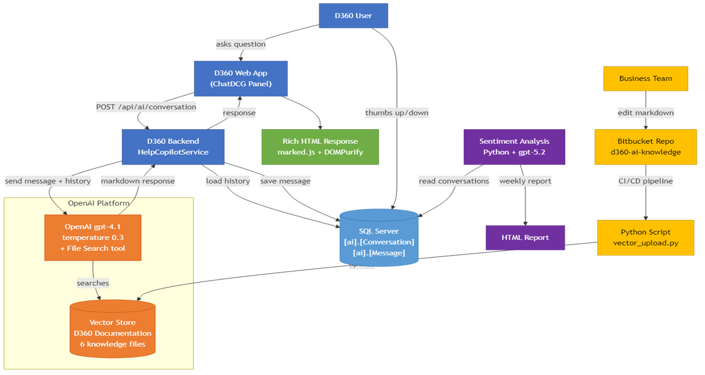

Customer-facing AI features
Two AI surface areas inside Deposits360 — ChatDCG and FilterAI — designed with deliberately different jobs. One explains, one does. Live with hundreds of paying banks; same model, opposite temperatures.
Deposits360 is DCG's flagship platform for community and small-bank treasury teams — ALM analysts and CFOs use it to model balances, plan rates, and monitor risk across their institution and across the market.
Most teams shipping AI into products in 2024 shipped one chat box. We shipped two features instead — because what bank CFOs actually need from AI in a financial planning tool is two different jobs, and conflating them makes both worse.
- ChatDCG explains. Q&A about the product, banking terms, and how features connect — built on RAG over markdown docs the business team owns.
- FilterAI does. Configures the actual product UI from a plain-language description — built as deterministic structured-output generation, not RAG.
They share a model (GPT-4.1) and a brand cue (the "AI" mark) but almost nothing else under the hood. Below is a side-by-side, then a deeper look at each.
| ChatDCG | FilterAI | |
|---|---|---|
| job | Explain | Do |
| pattern | RAG (vector store) | Structured output (validated JSON) |
| model | GPT-4.1 | GPT-4.1 |
| temperature | 0.3 — natural prose | 0.0 — fully deterministic |
| context source | Markdown docs in vector store | Live institution metadata injected per prompt |
| output | Rich HTML (marked.js + DOMPurify) | Validated JSON filter predicates |
| UI surface | Right-side panel | Inline filter bar |
| used in | Deposits360 | Deposits360 · Loans360 |
The problem
Bank CFOs got stuck three ways: calling DCG support, googling banking terms (and getting wrong answers), or stumbling through glossaries and the app trying to find the right page. Each path was slow, and the third one had a real risk — interpreting the wrong metric.
The approach
ChatDCG is a right-side panel that opens beside the product, not over it. The CFO sees their own bank's numbers and the answer at the same time. Responses are structured with headings and bullets, and where it makes sense, the answer points back into the product ("click the MCOF value on the Deposit Migration page") instead of replacing it.


UI decisions
- Familiar chat UX. Bank CFOs use ChatGPT and Claude at home. The interface borrows their conventions (turn-based chat, send button, suggested input) so there's nothing to learn.
- Disclaimer at the top of every response. "AI Generated content may be incorrect." Persistent, in-line, low-key.
- Branded entry point next to help. The ChatDCG button sits next to the help icon — framing AI as an extension of help, not a separate mode users have to remember.
- Bank-aware context. The selected institution flows into every prompt, so answers are framed in that bank's reality.
Architecture
A small backend service routes user messages plus conversation history to GPT-4.1 with file search enabled, against a vector store of six knowledge files covering product behavior, banking terms, and calculation methods. Responses come back as markdown, get sanitized through marked.js + DOMPurify, and render inline. Conversations and messages persist in SQL Server alongside thumbs-up / thumbs-down feedback.
The most interesting piece isn't the chat path — it's the
content ops pipeline. DCG's business team edits the
knowledge base as markdown in a Bitbucket repo
(d360-ai-knowledge), and a CI/CD job pushes changes
through vector_upload.py into the vector store.
Non-engineers own the answers ChatDCG gives.
A separate Python process running GPT-5.2 reads conversations weekly and produces an HTML sentiment report — closing the loop on response quality without instrumenting every interaction in production.

The problem
Deposits360 pages have four configurable surface areas — filters, metrics, indices, and group-by settings — each with dozens of valid combinations. Setting them up to answer a specific question ("show CDs with balances over $250K opened in the last 12 months") was hard, slow, and mistake-prone. CFOs frequently abandoned the configuration mid-way, or got the wrong view and didn't realize.
The approach
FilterAI lives inside the existing Filter bar — same place users already manage filters — marked with a small "AI" badge. They type what they want in plain language; FilterAI configures the page. The result is the regular product, with the regular controls visible and editable. Nothing is hidden behind a chat metaphor.
.png)
UI decisions
- Scope discipline. The launch copy explicitly says FilterAI does not interpret results, answer analytical questions, or provide insights. That copy lives in the product so users never confuse it with ChatDCG. Two AI features, two clean jobs.
- No new panel. Lives in the existing Filter bar. One AI badge says "AI" and that's the whole new mental model.
- Inspectable, not magic. A natural-language confirmation tells users what just happened; a "show more" link drills into the exact configuration applied.
- Shared feedback pattern. Thumbs-up / thumbs-down sit inline with the result — same mechanism users see in ChatDCG. Two surfaces, one feedback loop.
Architecture
Unlike ChatDCG, FilterAI is not RAG-based. It's a structured-output generator: the user's natural language gets composed with the institution's live metadata (its chart of accounts, available products, group-by hierarchies) and passed to GPT-4.1 at temperature 0.0. The model returns validated JSON predicates that the product applies directly to its filter engine.
Generation happens in two steps:
- Recommend the relevant fields from the institution's schema.
- Generate concrete predicates — values, bounds, and hierarchy paths — against those fields.
The split keeps the model honest about what it's doing. It also handles complex exclusion logic ("all NMDs except MMDA") that pure natural-language-to-SQL approaches reliably get wrong.
Recent additions: metrics selection and the Cross-Institution Analytics (CIA) toggle, both reachable in plain language. The backend is monitored for indirect prompt-injection and dependency naming collisions — a security stance most "AI in product" stories skip.
Both features are live in Deposits360, used by hundreds of paying customer banks. FilterAI has expanded into Loans360 and continues to absorb new product surfaces (metrics, CIA toggle). ChatDCG's content base grows weekly because the business team owns the markdown.
FilterAI took two years. Not because the requirements were murky — they weren't — but because the AI tooling underneath was evolving in real time. Models changed mid-build. Structured output APIs arrived. Vector store offerings consolidated. Function calling replaced earlier patterns. Every engineering decision was made against a moving floor.
The choices that aged best were the ones grounded in the product, not the tooling: a job-split between explain and do; a UI that embeds inside existing controls instead of adopting a chat-only paradigm; a content pipeline owned by business so the answers could evolve without engineering. The model under the hood will change again. The shape of the features won't have to.